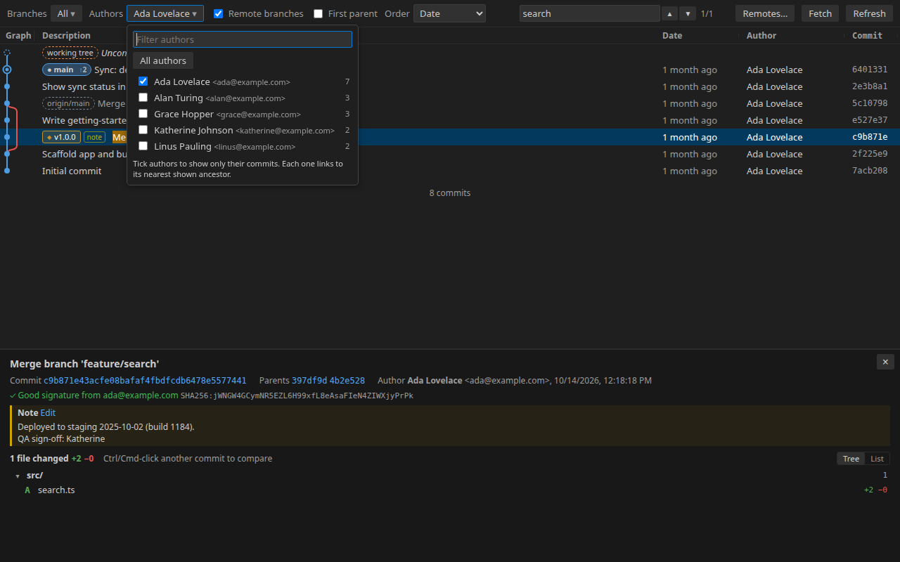

git log by author: show one person’s commits
To see what one colleague changed, or to find your own commits in a busy repository, filter the log by author. git log --author does it, but the pattern matches more than people expect, and with --graph the drawing stops telling the truth. This guide covers how --author matches, listing authors, .mailmap, the graph problem, filtering by author in VS Code with Mergeline, and hiding noise branches such as dependabot/*.
Quick answers
| I want to… | Run |
|---|---|
| Show commits by one author | git log --author='Ann Lee' |
| Show commits by any of several authors | git log --author='Ann Lee' --author='Bob Ray' |
| Match exactly one person, nobody with a similar name | git log --author='^Ann Lee <ann@example.com>$' |
| Ignore upper and lower case | git log -i --author=lee |
| Match the text literally, not as a regular expression | git log -F --author='ann.lee@old.example.com' |
| List every author with a commit count | git shortlog -sne --all |
| Leave out dependabot branches | git log --exclude='dependabot/*' --branches |
We ran every command on this page with git 2.53 in throwaway repositories and quote the output we saw. The main test repository has nine commits by Ann Lee, Bob Ray and JoAnn Kim on main and a merged feature branch, plus one commit Ann made from an old laptop under a different name.
git log --graph --format='%h %s (%an)' * 7804532 Old laptop commit (ann) * dec6be5 Merge feature (Bob Ray) |\ | * 857f1d3 Handle time zones (Ann Lee) | * 8daa653 Add date tests (Bob Ray) | * 8c569a3 Parse dates (Ann Lee) * | c943d29 Speed up lexer (Ann Lee) * | 8ec7ccf Fix typo in README (JoAnn Kim) |/ * cb3fc07 Set up CI (Bob Ray) * 630603d Add parser (Ann Lee)
How --author matches
The pattern is a regular expression (a text pattern in which characters such as ., ^ and $ have special meanings), and git tests it against the author’s name and email together, in the form Name <email>. A commit is shown if the pattern matches any part of that text. So a short pattern catches more than one person:
git log --format='%h %s (%an)' --author=Ann c943d29 Speed up lexer (Ann Lee) 857f1d3 Handle time zones (Ann Lee) 8ec7ccf Fix typo in README (JoAnn Kim) 8c569a3 Parse dates (Ann Lee) 630603d Add parser (Ann Lee)
“Ann” is inside “JoAnn”. To match one person and nobody else, anchor the pattern: ^ means the start of the text and $ the end, so the whole Name <email> has to match:
git log --format='%h %s (%an)' --author='^Ann Lee <ann@example.com>$' c943d29 Speed up lexer (Ann Lee) 857f1d3 Handle time zones (Ann Lee) 8c569a3 Parse dates (Ann Lee) 630603d Add parser (Ann Lee)
- The email counts too.
--author=leefound only the old-laptop commit, because its address isann.lee@old.example.com; “Lee” in “Ann Lee” has a capital L.--author=@example.comfinds everyone at that domain. - Case matters unless you add
-i(--regexp-ignore-case).git log -i --author=leefound all five of Ann’s commits. - Several
--authoroptions are OR’ed: a commit is shown if it matches any of them.--author='^Bob Ray ' --author='^JoAnn Kim 'listed Bob’s three commits and JoAnn’s one. --authorand--grepare AND’ed.git log --author='Ann Lee' --grep=dateslisted only “Parse dates”; with--author=Bobinstead it listed nothing.- Dots match any character.
--author='x@old.example.com'also matched an author whose address wasx@oldYexample.com.-F(--fixed-strings) treats the pattern as plain text, and then it did not.
List the authors in a repository
Before filtering, find out how each person’s name and email are actually written. git shortlog groups commits by author; -s prints only the counts, -n sorts by count, -e adds the email, and --all counts every branch:
git shortlog -sne --all 4 Ann Lee <ann@example.com> 3 Bob Ray <bob@example.com> 1 JoAnn Kim <joann@example.com> 1 ann <ann.lee@old.example.com>
The last line is the same person as the first, committing with another name and email. That is common: a work and a personal address, or a laptop set up before user.name was.
One person, several identities: .mailmap
A .mailmap file at the top of the repository maps old identities to one canonical one. Each line gives the identity to show, then the identity found in commits:
Ann Lee <ann@example.com> ann <ann.lee@old.example.com>
git shortlog -sne --all 5 Ann Lee <ann@example.com> 3 Bob Ray <bob@example.com> 1 JoAnn Kim <joann@example.com>
In git 2.53 git log uses the mailmap by default too (the log.mailmap setting, which we had not set), and --author is matched against the mapped identity:
git log --format='%h %s (%an)' --author='^Ann Lee <ann@example.com>$' 7804532 Old laptop commit (ann) c943d29 Speed up lexer (Ann Lee) 857f1d3 Handle time zones (Ann Lee) 8c569a3 Parse dates (Ann Lee) 630603d Add parser (Ann Lee)
Two things to know. The old identity no longer matches at all: --author='^ann <ann.lee@old.example.com>$' printed nothing. And %an in a format still prints the name written in the commit (“ann”); %aN prints the mapped one. To match the identities as they are written in the commits, add --no-use-mailmap, or run with -c log.mailmap=false; either brought the old-laptop commit back out of Ann’s list.
Why git log --graph --author misleads
Add --graph to an author filter and you get a tidy straight line:
git log --graph --oneline --author='Ann Lee' * 857f1d3 Handle time zones * 8c569a3 Parse dates * c943d29 Speed up lexer * 630603d Add parser
It looks as if Ann made four commits one after another on one branch. In fact two are on feature and two on main (compare the full graph above). The reason: for a path filter (git log -- <file>), git rewrites parents. Each shown commit is drawn as the child of its nearest shown ancestor, so the lines stay true. For --author it does not. Each commit keeps its real parents, and those are usually commits that are filtered out:
git log --format='%h %p %s' --author='Ann Lee' # %p: parent hashes c943d29 8ec7ccf Speed up lexer 857f1d3 8daa653 Handle time zones 8c569a3 cb3fc07 Parse dates 630603d Add parser
None of those parents are in the output, so --graph has nothing to connect and stacks the commits in a column. In a smaller repository we checked the difference directly: with -- f, git log --parents reported the previous commit that touched f as the parent; with --author it reported the real parent, which the filter had hidden. Use --author for lists, not for pictures of history.
Filter by author in Mergeline
Mergeline is a free, MIT-licensed git graph for VS Code. From version 0.15 it can show only the commits of the authors you pick, and draws the graph correctly while it does.
- Open the author list. Click Authors in the toolbar. It lists everyone with a commit in the branches the graph shows, with the number of commits each, and a box to filter the list by typing part of a name or email.
- Tick one or more authors. The graph shows only their commits. Each commit is joined to its nearest shown ancestor: Mergeline rewrites the parents itself, the way git does for a path filter, so lines connect commits that really are related and branches still look like branches. Ticking Ann Lee does not bring in JoAnn Kim; an entry is one whole name and email.
- Or start from a commit. Right-click any commit and choose Show only commits by <name>. While only that author is shown, the same place offers Show commits by all authors. The All authors button in the list resets the filter too.
- Combine it. The author filter works together with the Branches checklist (see filter by branch) and the First parent toggle. Find with All history keeps the author filter, so it searches only the chosen authors’ commits.

Mergeline matches authors exactly as they are written in the commits (the names the graph shows), even when a .mailmap maps them to another identity; it runs git log with --no-use-mailmap for the filter.
The author filter is not available in file history: there the Authors button is disabled.
In the Git Graph extension, filtering by author is issue #171, opened in September 2019. When we checked on 20 November 2026 it was still open, with 19 thumbs-up.
Mergeline is not on the VS Code Marketplace yet. Download the .vsix from GitHub and run Extensions: Install from VSIX… (full steps).
Hide dependabot and other noise branches
Bots such as Dependabot and Renovate open a branch for every dependency update. Each one adds a line to the graph. With git log, put --exclude=<pattern> in front of --branches or --remotes to leave matching branches out. The pattern is relative to the kind of branch, so remote-tracking branches need the remote in it (origin/dependabot/*, or */dependabot/* for any remote):
git log --graph --oneline --branches --remotes * 0559e61 (origin/feature/login, feature/login) Login form | * a85e79f (HEAD -> main, origin/main, origin/HEAD) Docs |/ | * 1bb5ae9 (origin/dependabot/npm/lodash-4.17.21) Bump lodash |/ | * c5ad9bd (origin/dependabot/npm/vite-5.4.1) Bump vite |/ * 4fc726c Initial git log --graph --oneline --exclude='dependabot/*' --branches --exclude='*/dependabot/*' --remotes * 0559e61 (origin/feature/login, feature/login) Login form | * a85e79f (HEAD -> main, origin/main, origin/HEAD) Docs |/ * 4fc726c Initial
Each --exclude applies only to the next --branches or --remotes, so you repeat it for each. Placed after them, it had no effect. The * also matches /: dependabot/* left out dependabot/npm/vite-5.4.1.
In Mergeline, the setting mergeline.hiddenBranches is a list of branch names or patterns such as ["dependabot/*", "renovate/*"], where * matches anything, including /. It applies to local branches and to remote-tracking branches under any remote, and Mergeline passes it to git as --exclude before --branches and --remotes.
- From the graph: right-click a branch badge and choose Hide this branch, or, for a branch like
dependabot/npm/vite-5.4.1, Hide all dependabot/… branches. Both add an entry to the setting. - To show them again: the Branches checklist lists the hidden patterns at the bottom, each with a ✕; click it to remove the pattern.
- The checked-out branch is always shown, even if it matches a pattern.
- Hiding a branch does not hide shared commits. Commits that a visible branch or tag also contains still appear; only commits that nothing visible contains drop out.
- Picking branches overrides it. When you tick branches in the Branches checklist, the graph shows exactly those and ignores
mergeline.hiddenBranches.
Excluding branches by pattern is Git Graph issue #360, opened in August 2020; on 20 November 2026 it was open with 14 thumbs-up.
FAQ
How do I see only my own commits?
git log --author="$(git config user.email)" matches the email you commit with. In Mergeline, right-click one of your commits and choose Show only commits by <name>.
Can I filter by committer instead of author?
Yes, in the terminal: --committer takes the same kind of pattern. The author wrote the change; the committer is whoever last created the commit, for example by rebasing or cherry-picking it. Mergeline’s filter uses the author.
Why does --author find nothing for a name I can see in the log?
Check case (add -i), special characters (add -F), and whether a .mailmap maps that identity to another one; then git matches only the mapped identity.
Related: filter by branch, git log --graph and file history.